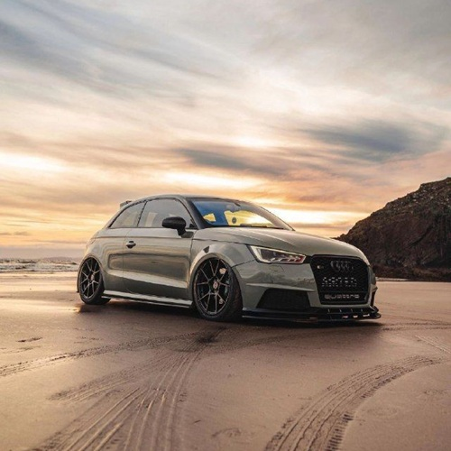
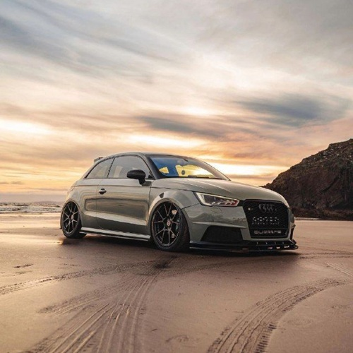

Audi: Inovação e Elegância Sobre Rodas
A Audi AG é uma renomada fabricante de automóveis de luxo com sede na Alemanha, conhecida por sua engenharia de precisão, design sofisticado e tecnologias inovadoras. Fundada em 1909 por August Horch, o nome “Audi” vem do latim e significa “ouça”, uma referência direta ao sobrenome do fundador.
Seu famoso logotipo com quatro anéis entrelaçados representa a fusão de quatro empresas: Audi, DKW, Horch e Wanderer — que formaram a Auto Union em 1932. Ao longo dos anos, a marca se consolidou como símbolo de desempenho, segurança e sofisticação no mundo automotivo.
Fonte: wikipedia.org
August Horch: O Visionário por Trás da Audi
August Horch foi um pioneiro da indústria automotiva alemã. Antes de fundar a Audi, ele já havia estabelecido a sua própria empresa, a Horch & Cie, em 1899. Após conflitos com seus parceiros, Horch deixou a empresa e, para continuar sua paixão por carros, fundou uma nova marca em 1909. Como não podia usar seu próprio sobrenome por questões legais, optou pelo nome “Audi”, a tradução latina de “Horch”, mantendo assim sua identidade e legado vivos. A visão e determinação de August Horch foram fundamentais para estabelecer os pilares de inovação e qualidade que definem a Audi até hoje.
Fonte: www.audi.com
.jpg)
Família Audi: Modelos, Tecnologia e Performance

Audi Q3 – Versatilidade Compacta e Moderna
O Audi Q3 é um SUV compacto que combina design arrojado, tecnologia de ponta e um espaço interno surpreendente para a categoria. Perfeito para a vida urbana, ele oferece conforto, segurança e conectividade, tornando-se ideal para quem busca praticidade sem abrir mão do estilo e da qualidade Audi. Com motorizações eficientes e sistemas avançados de assistência, o Q3 se destaca na mobilidade do dia a dia.
Audi RS 6 – Potência e Performance em Forma de Perua
O Audi RS 6 Avant é a perfeita fusão entre versatilidade e esportividade extrema. Equipado com um motor V8 biturbo de alta potência, entrega aceleração impressionante e um desempenho robusto, aliado a tecnologias de ponta que garantem estabilidade e controle. Seu design agressivo e o interior sofisticado fazem do RS 6 uma máquina para entusiastas que querem conforto e performance sem concessões.
Audi RS 7 – Luxo e Potência para uma Experiência Única
O Audi RS 7 é um sedã esportivo de luxo que ultrapassa os limites da performance com seu motor V8 biturbo de mais de 600 cavalos. Além da força bruta, o modelo oferece design aerodinâmico e interior repleto de tecnologia e conforto, combinando velocidade, estilo e exclusividade em um só carro. É a escolha certa para quem busca emoção e refinamento em cada trajeto.

Audi S4 – Esportividade Refinada para o Dia a Dia
O Audi S4 é um sedã médio que une um motor turbo potente de 354 cavalos com uma suspensão esportiva calibrada para máxima dirigibilidade. Projetado para oferecer performance dinâmica e conforto, ele conta com tecnologia avançada e acabamento sofisticado, tornando cada viagem prazerosa e segura. Ideal para quem deseja um equilíbrio entre esportividade e funcionalidade no cotidiano.

Audi S5 – Elegância e Dinâmica de Alta Performance
O Audi S5 é a versão esportiva do A5 que alia design elegante a um motor V6 de 354 cavalos, entregando uma condução ágil e envolvente. Com suspensão adaptativa e tração quattro, oferece controle e estabilidade mesmo nas curvas mais exigentes. Seu interior combina tecnologia de ponta e materiais premium, garantindo conforto e estilo para quem valoriza performance sem abrir mão da sofisticação.
Audi e-tron GT – Esportividade e Sustentabilidade no Futuro da Audi
O Audi e-tron GT é o sedã esportivo totalmente elétrico da marca, que une desempenho de supercarro a uma autonomia competitiva e tecnologias inovadoras. Com design futurista e interior luxuoso, ele redefine o conceito de esportividade sustentável, oferecendo respostas rápidas, tração quattro elétrica e um sistema de propulsão avançado. Um ícone para a nova era da mobilidade elétrica.
Audi: Detalhes Técnicos e Valores
Confira nesta tabela os principais modelos Audi, com preço, potência e desempenho. Informações essenciais para sua escolha perfeita.
| modelo | preço | potencia | Categoria | Velocidade Máxima (km/h) |
|---|---|---|---|---|
| Audi Q3 | R$ 309.990 | 231 cv | SUV | 233 km/h |
| Audi RS 6 Avant | R$ 1.299.990 | 600 cv | Esportivo / Perua | 280 km/h (limitada) |
| Audi RS 7 Sportback | R$ 1.399.990 | 600 cv | Esportivo / Coupé 4 portas | 280 km/h (limitada) |
| Audi S4 Sedan | R$ 499.990 | 354 cv | Sedan Esportivo | 250 km/h (limitada) |
| Audi S5 Sportback | R$ 524.990 | 354 cv | Coupé 4 portas / Esportivo | 250 km/h (limitada) |
| Audi e-tron GT | R$ 1.099.990 | 530 cv (até 646 cv com boost) | Elétrico / Esportivo | 245 km/h |
Audi em Cena: Tecnologia, Elegância e Força
.jpg)
.jpg)
.jpg) 
